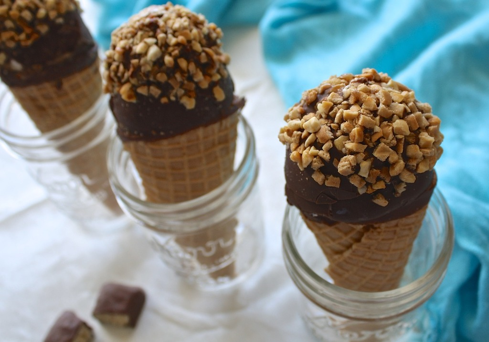

Ice Cream Sandwich Cake Pops

Ice cream cake on a stick, crunchies and all! The shell coating against the cake part of the ice cream sandwich gives it the most amazing texture. It's not thin and brittle like normal chocolate-coated pops, but more like the inside of a Carvel® ice cream cake. Assorted toppings (I like crushed Oreo's®!) add crunchy texture and the cake warms a little so it's a perfect contrast to the cold ice cream. You just have to try this, no dessert could be easier! Kids would have fun making these but adults alike will enjoy eating them.
Ingredients(1x)
- 6 (2.5 ounce) ice cream sandwiches
- 2 (7.25 ounce) bottles chocolate shell topping (such as Magic Shell®)
- 12 popsicle sticks
- assorted toppings such as sprinkles, crushed cookies, nuts, crushed candy bars
Directions
- Cut ice cream sandwiches in half crosswise. Insert a popsicle stick through up through the center of each cut end.
- Remove the caps and seals from the shell topping. Place in the microwave and cook for 8 seconds. Pour each bottle shell topping into a glass measuring cup.
- Dip each pop into shell topping until completely covered, allowing excess to drip off. Dip the top ends in desired toppings and place on parchment-lined baking sheet.
- Freeze pops at least 1 hour before serving.
Return To Home Page